Zwracam uwagę, że to nie jest hybryda! Niestety, na Otomoto nie ma możliwości wybrania odpowiedniej wersji pojazdu
Sprzedaję swojego Forda Explorera z 2021 roku, którego użytkowałem przez ostatni czas i naprawdę bardzo go polubiłem. To duży, wygodny i mocny samochód, w którym czuję się bezpiecznie i komfortowo zarówno w mieście, jak i na trasie.
Silnik 2.3 EcoBoost zaskoczył mnie pozytywnie – 300 KM naprawdę robi swoje, a przy tym spalanie jest rozsądne jak na tak duże auto. Automat 10-biegowy pracuje płynnie, nie szarpie, dobrze dobiera biegi. Fajne też, że jak zapomnę wrzucić „P”, to auto robi to samo po zgaszeniu silnika – małe rzeczy, a cieszą :)
Jazda tym autem to przyjemność – pełny napęd 4x4 działa świetnie, nie trzeba się martwić o pogodę czy śliską nawierzchnię. W środku bardzo wygodnie – skórzane fotele, dużo miejsca, dobra klima z przodu i z tyłu, i porządne wygłuszenie.
Mam wersję 7-miejscową – rzędy siedzeń można ustawiać według potrzeb. Co mnie zaskoczyło – nawet na trzecim rzędzie siedzi się wygodnie, są podłokietniki, cupholdery, normalne zagłówki. Jak się złoży fotele, to bagażnik robi się ogromny – spokojnie można się tam położyć i przespać podczas wyjazdu czy wyprawy w plener.
Z dodatkowych rzeczy: adaptacyjny tempomat (super w korkach – sam hamuje i rusza), kamera cofania, system utrzymania pasa i zapobiegania kolizjom, odpalanie z kluczyka, elektryczna klapa bagażnika – wszystko działa.
Samochód jest już zarejestrowany, ma aktualne OC i przegląd, jeździ bez problemu.
Sprzedaję z żalem, ale potrzebuję teraz środków. Jeśli ktoś szuka przestronnego, wygodnego i mocnego auta rodzinnego – Explorer naprawdę daje radę.
 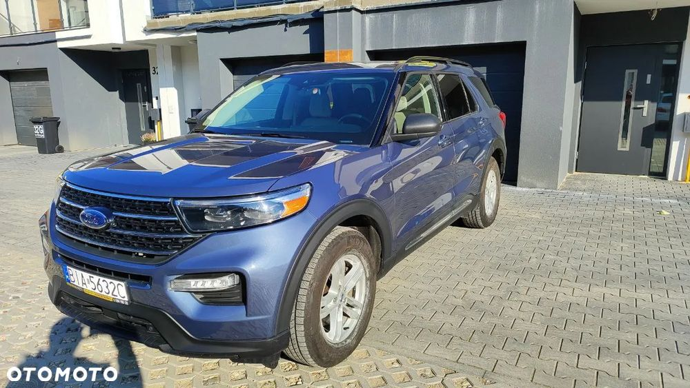
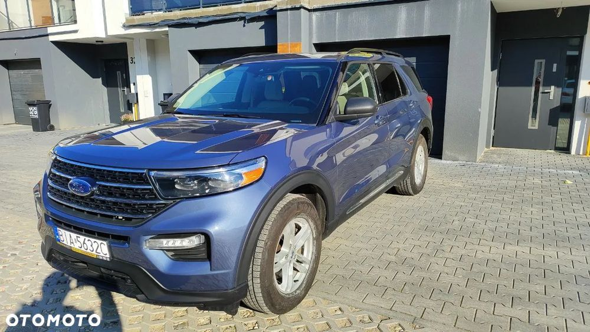 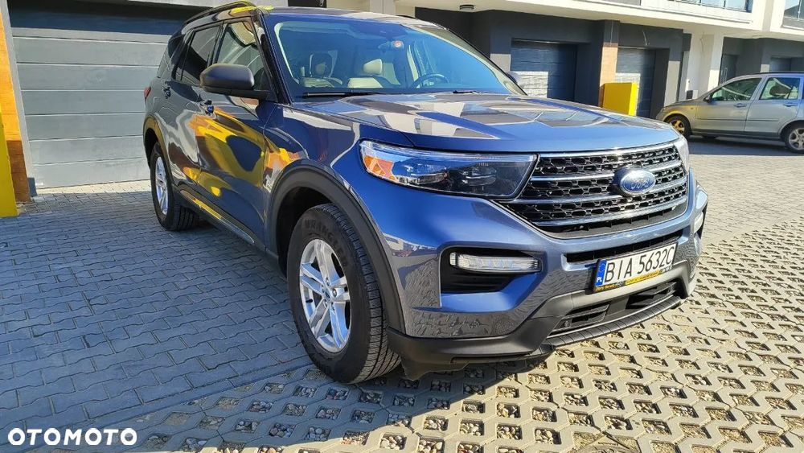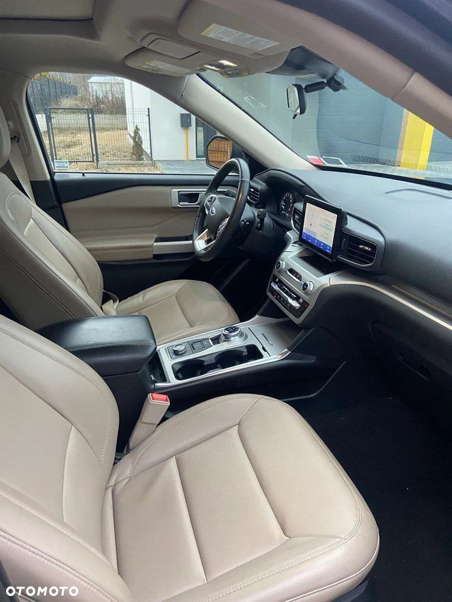
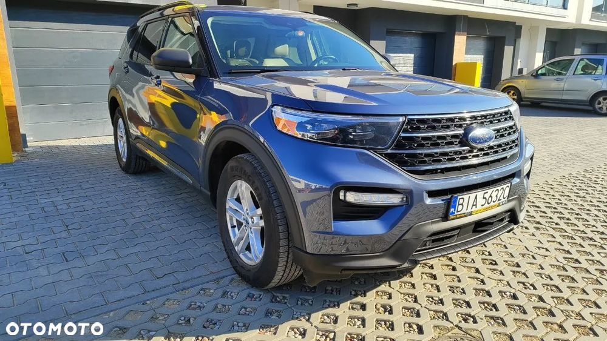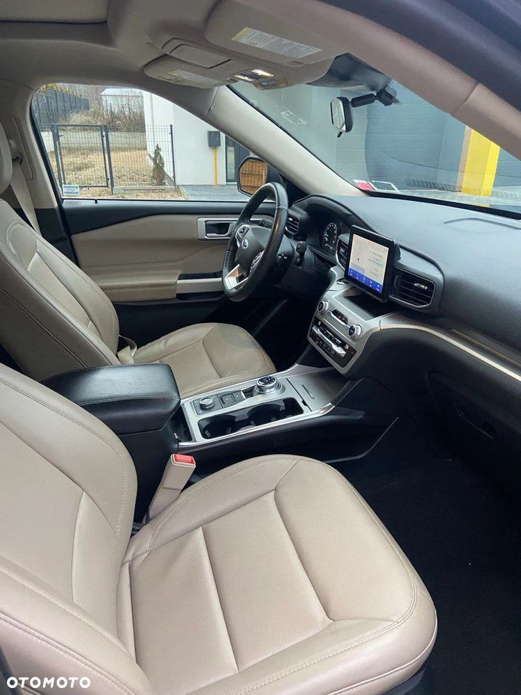 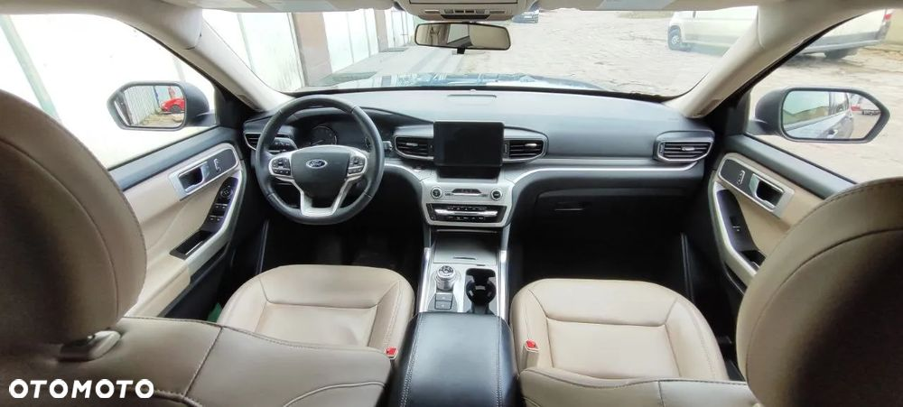
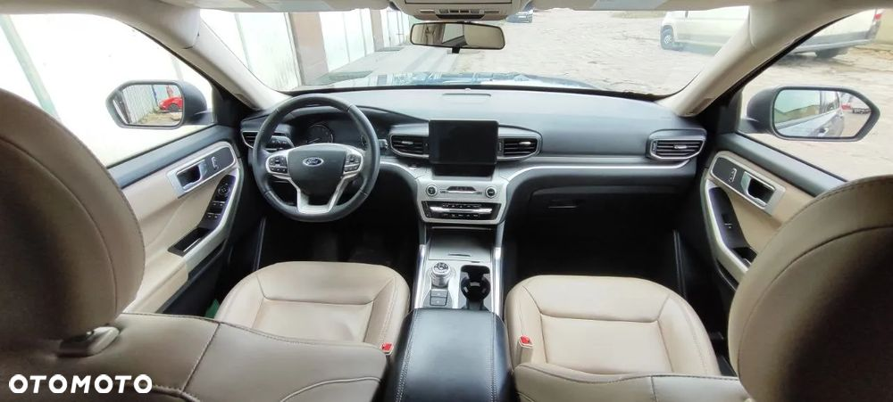 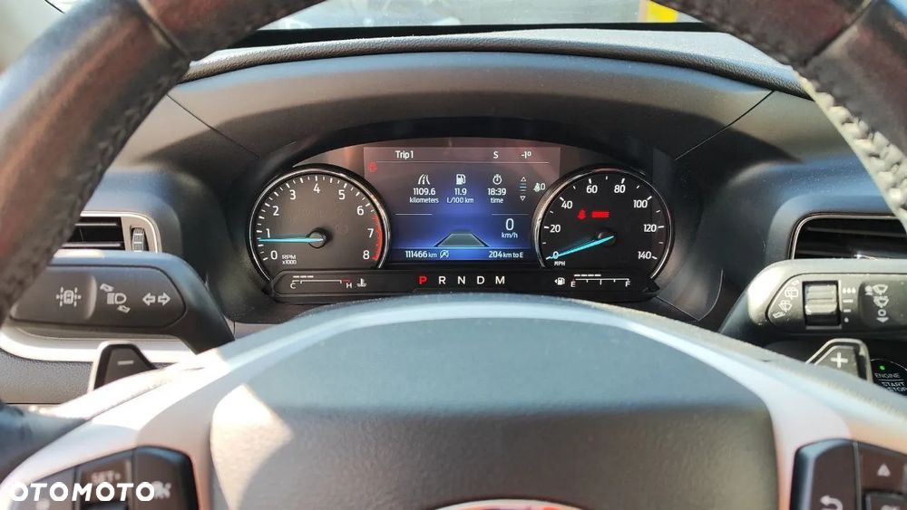
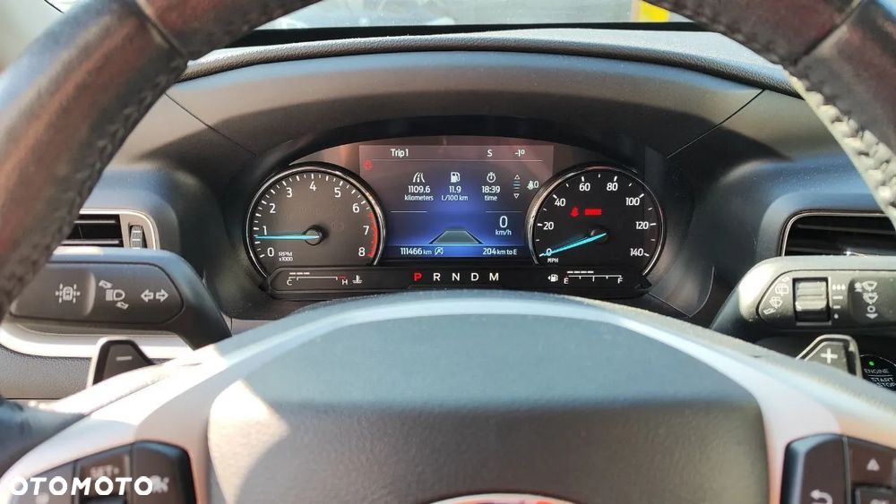

 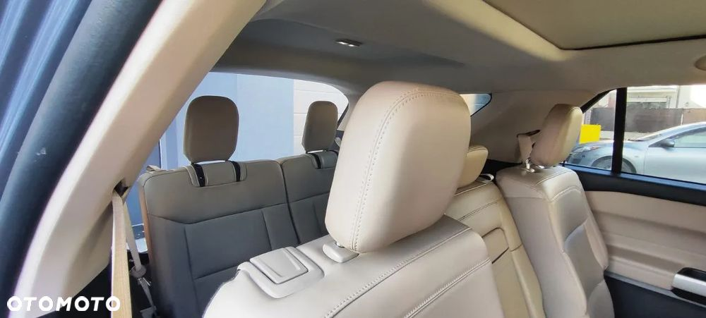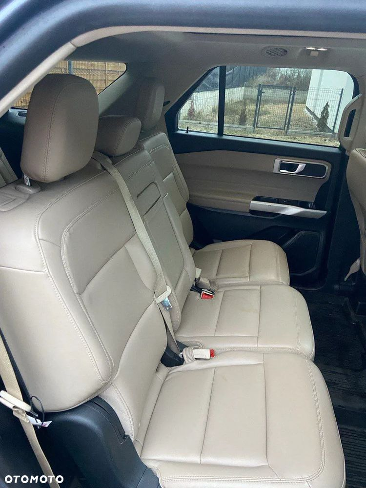
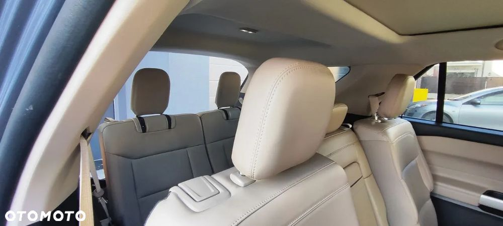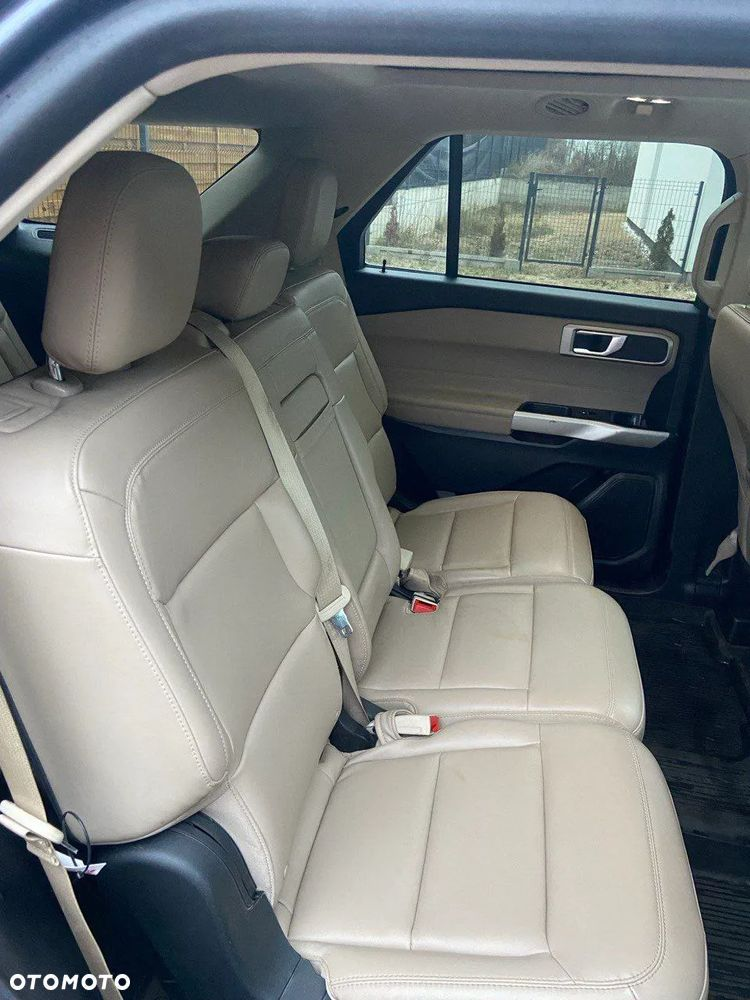


 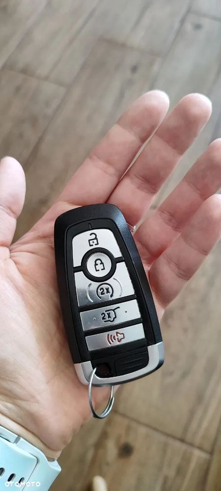
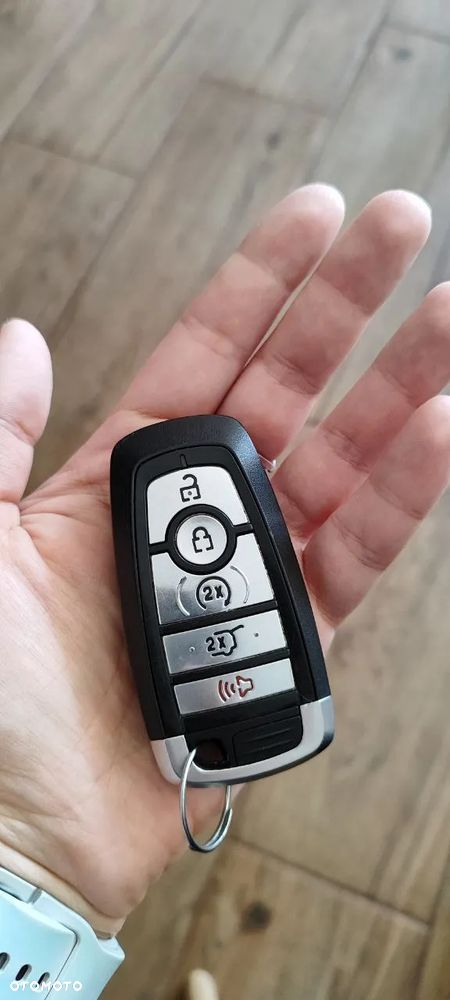